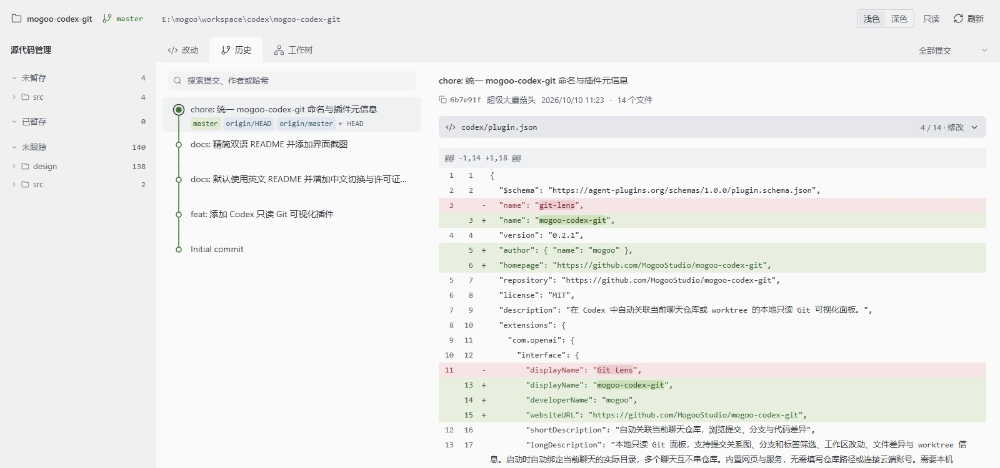
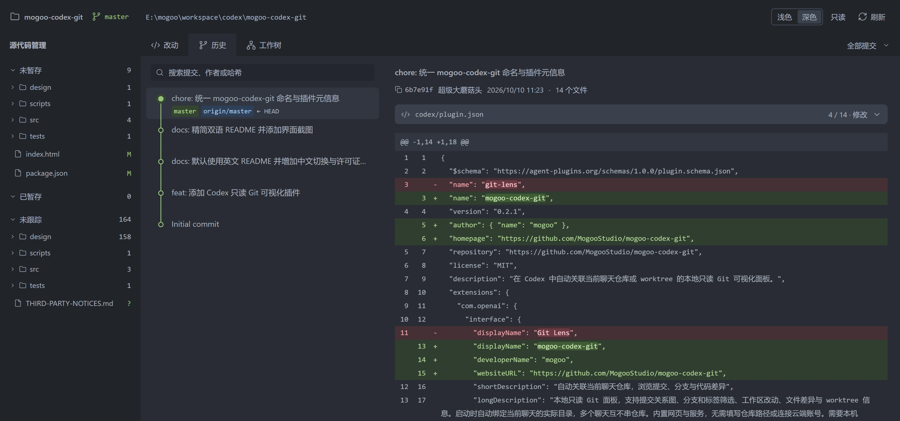
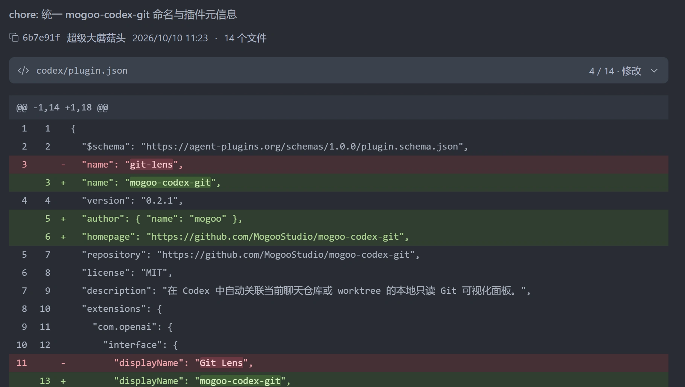
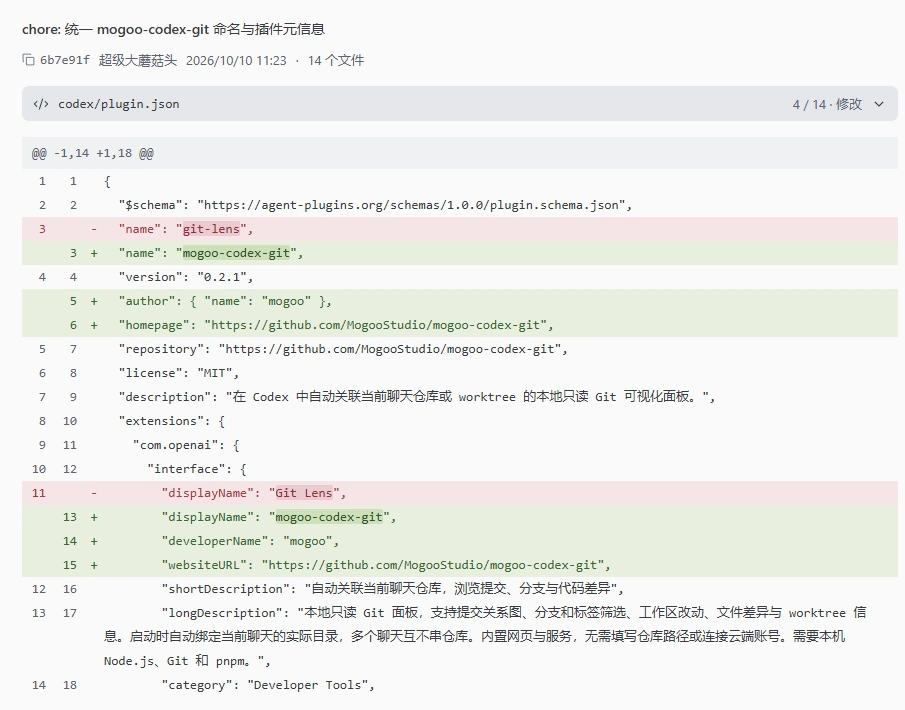

01 / 提交历史读懂提交，
读懂提交，
顺着历史回看。
把提交之间的关系展开。分支、标签和搜索入口，让你快速找到需要查看的历史。

一个本机只读面板，展开提交历史和文件差异。

把提交之间的关系展开。分支、标签和搜索入口，让你快速找到需要查看的历史。

从提交到文件，再到具体代码。带行号的差异，让增加、删除和修改都有清楚的位置。
仅在本机读取，不上传仓库。
在对应的项目聊天中打开面板，就能查看这个仓库的改动。切换聊天或 worktree 后，再次调用即可。
面板只读取本机 Git 数据，不上传仓库，不执行暂存、提交或切换分支。

把安装请求交给 Agent，或者在终端运行两条命令。插件内置界面和服务，无需手动构建。
安装后，在项目聊天中说：
“用 mogoo-codex-git 打开当前聊天的 Git 面板。”
请帮我安装这个 Codex 插件：https://github.com/MogooStudio/mogoo-codex-git
codex plugin marketplace add MogooStudio/mogoo-codex-git --json codex plugin add mogoo-codex-git@mogoo-codex-git --json
已在 Windows 验证。插件未显示时，新开聊天或重启 Codex。